Radar
Weather · iOS
A storm radar and hurricane tracker that tells you when a storm reaches you and what to do.
Open the caseLead product designer. Payments, checkout, anti-fraud back-offices and design systems — from product logic to how the work ships.
Selected work
~30 blocks instead of dozens of hand-drawn forms, and themes split into two axes so ten brands fit one system.
Monitoring, the transaction, cross-check and the blacklist as one path, so an analyst goes from a single payment to everything connected to it.
A visual builder on top of an engineers' rule language. The code view stays for those who know it; the finished rule stays readable later.
Payments as intent, transaction and operation; routing as one canvas of restrictions; balances that move in named modes with a confirmation instead of a toggle in a table.
200+ hours of user research showed people cared about how they would feel, not about the weather. Over 10–15 iterations the product became a health tracker.
Weather · iOS
A storm radar and hurricane tracker that tells you when a storm reaches you and what to do.
Open the caseOwn product · iOS
Five artworks a day with the story behind each, on the phone, the widget and the watch.
Open the caseCrypto processing · 2019–20
A consumer wallet, back-offices and the logo mark still in use.
Open the caseOwn product · 2026
A Telegram assistant that turns a crew’s chats, voice notes and receipts into paperwork.
Open the caseOwn product · ~1,000 users
A medication reminder built with one engineer; it earned back most of what we put in.
Open the caseOwn product · 2018, rethought 2026
My 2018 app for meeting people through plans, and how I would design it today.
Open the caseMore from my files
Screens from the cases above and from older concepts: food ordering, money and crypto apps, Instagram stories for a car dealer.
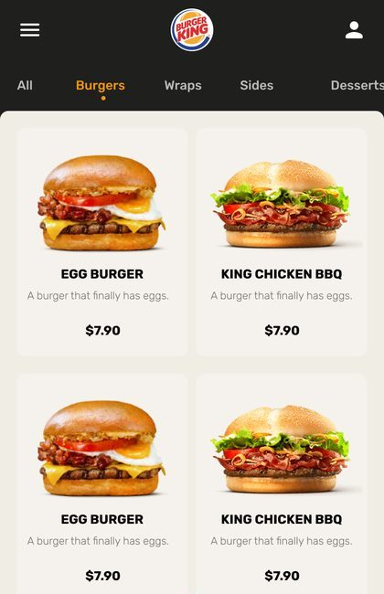
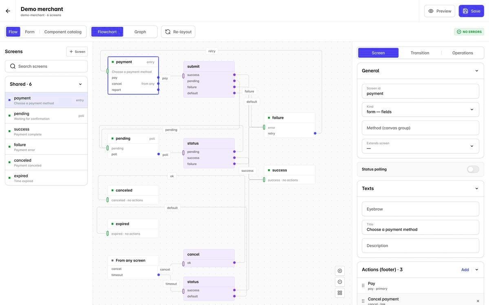
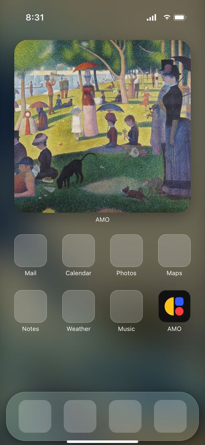
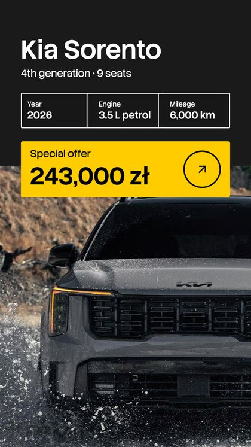
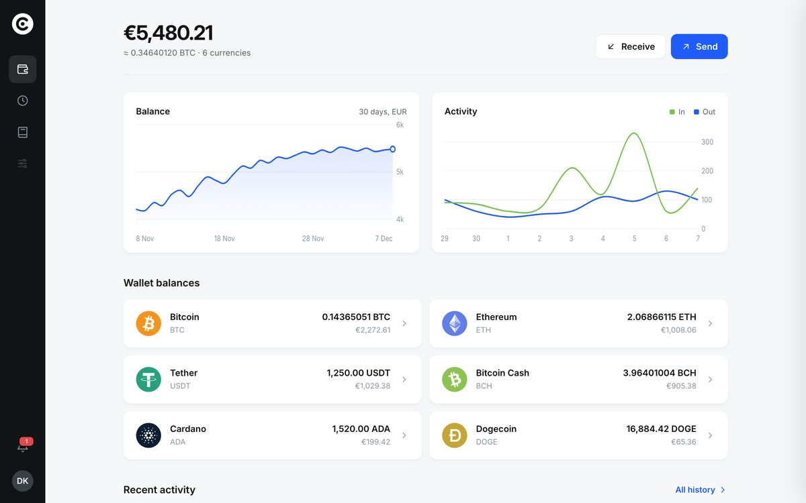
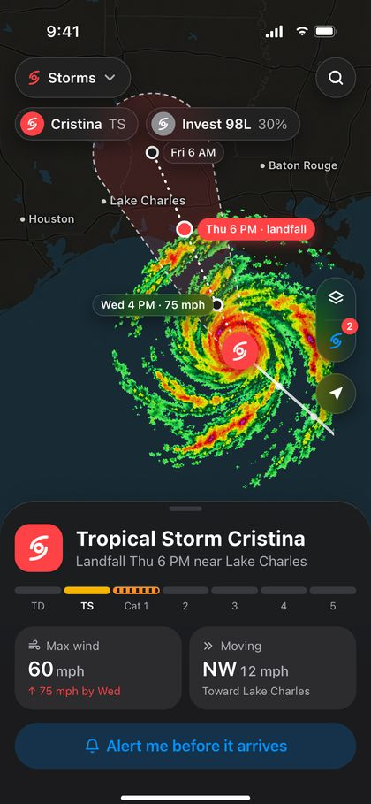
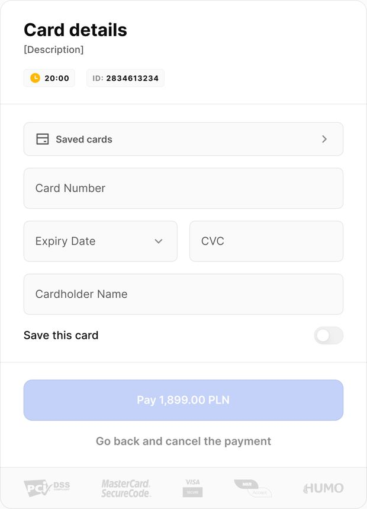
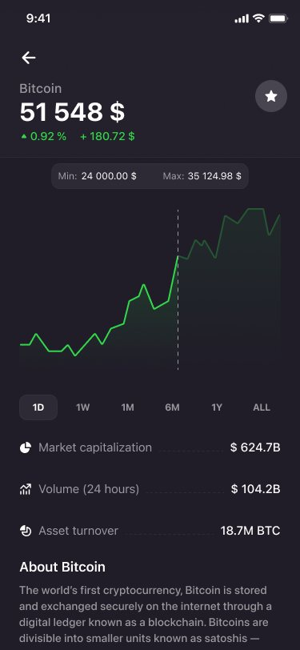
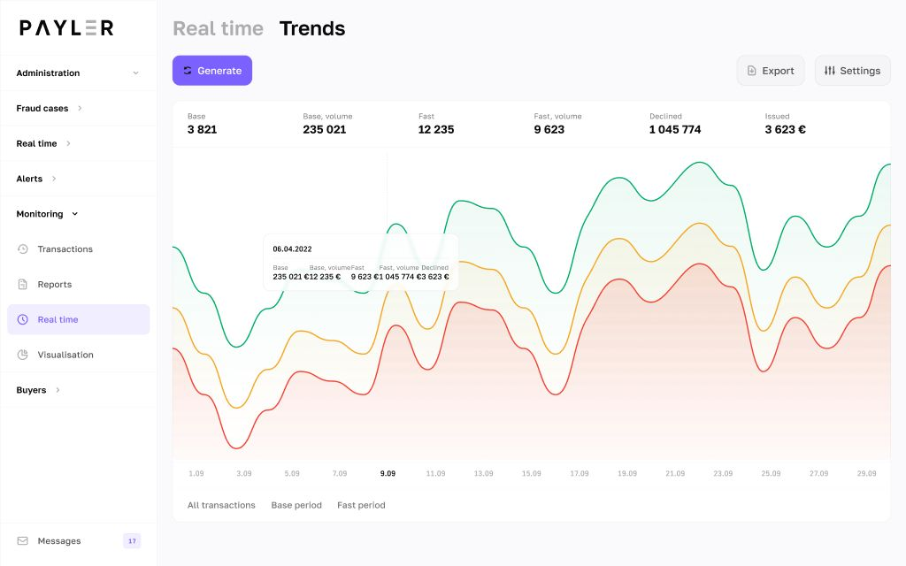
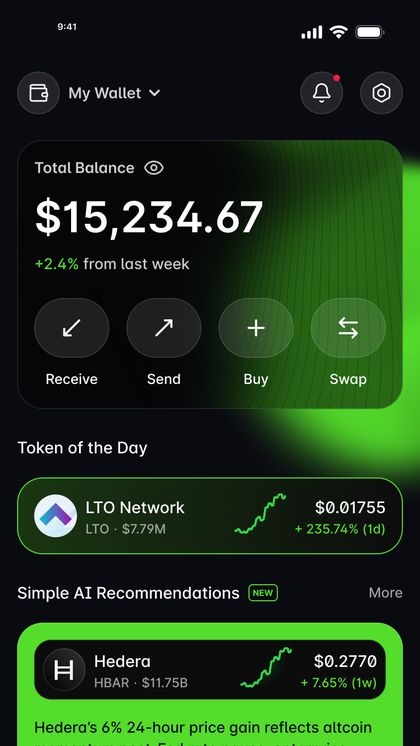
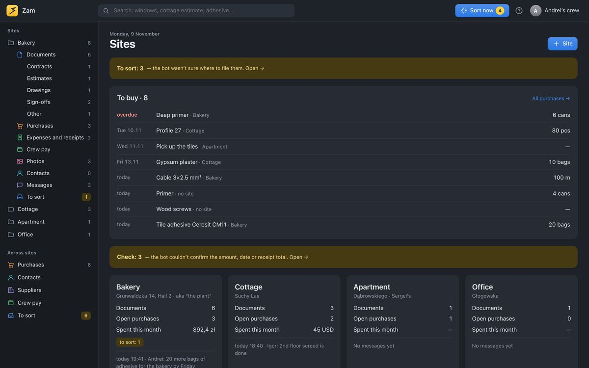
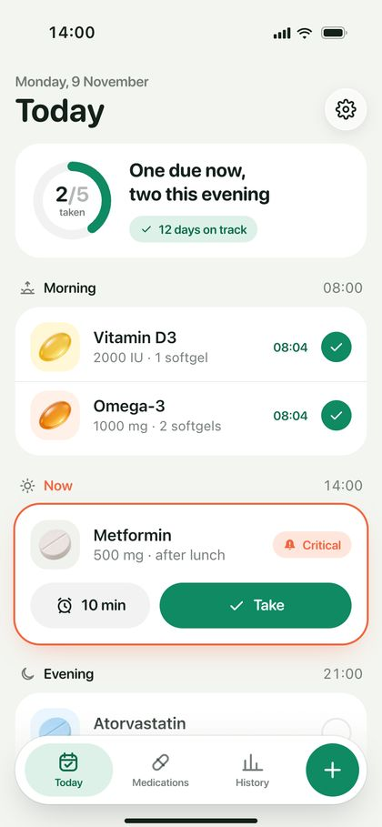
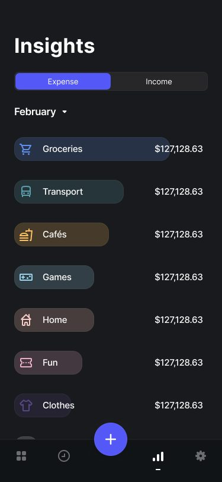
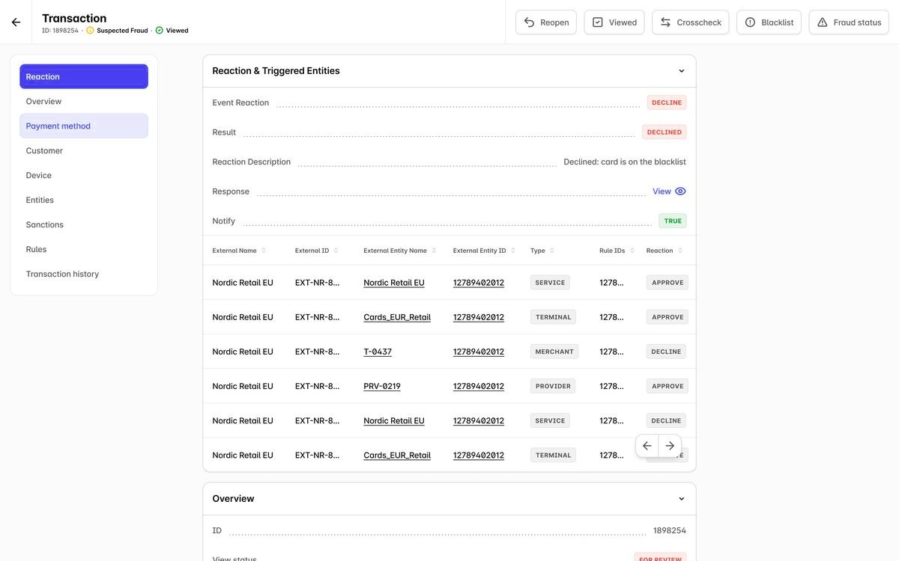
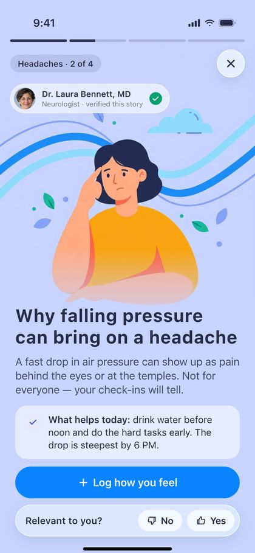
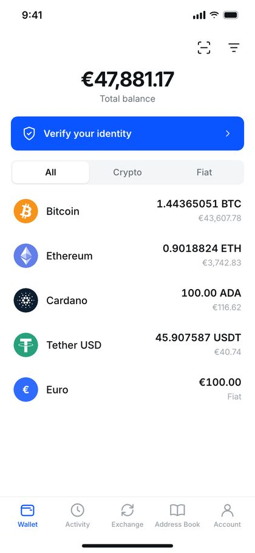
How I work with AI
11,750 fixes across Core and six product files.
Every pass started as a dry-run report I read before anything was applied. AI does the volume; the decisions and the review stay mine.
Read the full audit caseWhich libraries, variables and styles are allowed. Company data is anonymised before it reaches any AI tool — a written convention, not a habit.
Instances, variables, text-run colours, styles, raw values. Six product files, one report per pass.
Relinking by name would have silently halved every gap in the product. I mapped by value and kept intentional off-scale values raw.
The first pass skipped text-run colours; a second, independent pass caught it. Weekly retros turn misses into rules and checks.
This page and the walkthroughs in the cases were built the same way: my tokens, AI-written code, my review.
About
I do my best work in small teams with high ownership and fast decisions.
I own the work past the design file. At Payler I hired a second designer and moved them from marketing to product work. Based in Poznań, working remotely.
I design the everyday parts of life — money, health, weather — so they take less of your attention.
Dzmitry KuzmiankouProduct designer, Poznań
I'm looking for a founding or first-designer role in a product team where design changes what ships. Telegram and email both reach me directly.